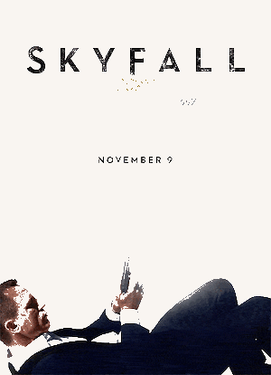

If you want to know how James Bond – sorry, I mean Daniel Craig – starts the day, I can tell you. Two double espressos with honey. Plus poached eggs on toast. With another double espresso to follow. So basically: caffeine, more caffeine and some more caffeine, with honey to soften the blow. Craig needs all the help he can get when we meet in July: just four days ago the 47-year-old finished an epic eight-month shoot for ‘Spectre’, which saw him hopping back and forth between Pinewood Studios near London and Mexico City, Morocco, the Austrian Alps and Rome.
It’s the British actor’s fourth outing as Bond, and his second with the director Sam Mendes after the success of ‘Skyfall’ – which in 2012 took over $1,000 million globally. He thinks – thinks – ‘Spectre’ is going to be a stylish, classic Bond movie, and Craig is not an actor who talks bullshit. He’s blunt. He’s thoughtful. He’s wary of being precious. But he’s also nervous. At one point a look of horror passes over his blue eyes. ‘God, hubris is a terrible thing in this business,’ he says, checking his enthusiasm. ‘I just pray the movie is going to be great.’ So, no pressure, then. Another double espresso, please…
So you’ve just finished eight months of filming ‘Spectre’. Did it all end with a bang or a whimper?
‘It’s always a whimper. I wish movies ended and we all high-fived each other and said, “Yeah! We did good work!” But they tend to peter out. We filmed in Morocco for the week before the very end and that felt like the real end of the film. We went out there and blew shit up! We did stuff that felt like a Bond movie. It felt like a good way to finish.’
What do you most want to do when you finish such a long shoot?
‘Literally, just have a holiday. It’s fair enough, no? I just want to switch my brain off. What usually happens is it’s 6am on a Sunday and I’m bolt upright in bed thinking that I’ve got to go to work. It’s about switching that feeling off, turning the alarm off and going to sleep. I drink a lot more too. I’ve started this week. Just relaxing.’
Did you always plan to play Bond for a fourth time? It's been ten years now.
‘Well, I was contracted to do another one. That was all set up. But at the studio there was a real keenness to get it done as soon as possible. In fact, there was a conversation at one point that went: “Let’s film two movies back to back.” I just went: “You’re out of your fucking minds.” In the nicest possible way. They’re just too big.’
You described ‘Skyfall’ as ‘Bond with bells on’. So how would you describe this new Bond movie, ‘Spectre’? Same bells, different tune?

‘There you go, that’s perfect! The complicated answer, without me having to think of some clever line, is that “Skyfall” did really well and broke all sorts of records and was a massive success. Then we had to do another one – which for all of us, the director Sam Mendes included, felt incredibly daunting. What the fuck are we going to do? Once we started, we realised we couldn’t think about “Skyfall”. We had to think about this film.’
'So if that was bells on, there’s more of everything in this film. It felt completely the right thing to do. We’ve got the character of Moneypenny back, and Q, and now Ralph Fiennes is playing M, so it was, like: right, let’s get all of them into the story. Things started building from there. Everyone’s been banging on to me about the gadgets. “Where are the gadgets?” Before it hasn’t felt right, and it’s not like we’ve made this one heavily into gadgets, but we’ve snuck a lot of stuff in. So, yes, it’s got more bells!’
There was more humour in ‘Skyfall’ than in ‘Casino Royale’ or ‘Quantum of Solace’. Will that continue with ‘Spectre’?
'The humour in “Skyfall” was conscious. I’d be lying if I said it wasn’t. I just think there’s room for it. Especially when you’ve got someone like Sam Mendes at the helm who is the truth police – and I’m the truth police too. We’re always asking: is this real? Then the humour can happen. But it’s not gag writing. They’re not the kind of movies I want to make. Really, really, really good gags are few and far between. Those writers are out there, but they’re rare. Look at people like Seth Rogen and people who make those movies, a lot of that is improvisation. They’re funny people and I’m not used to doing that sort of thing. But we’ve got people like Ben Whishaw and Rory Kinnear who are very easy with humour. But, yes, short answer: we tried to put more humour into this movie!’
Were you involved in bringing Sam Mendes back to direct?
‘Yes, I was begging him. Begging him. They offered him loads of money, of course, but I was also begging him to do it. They wanted to make the movie very quickly at first and he said he couldn’t. He just didn’t have time. He had three theatre productions he was working on. How he fucking does it I have no idea. And they were saying: we have to get moving on the script and he was, like: “No, I can’t do it.”’
Were you disappointed when it looked like he wouldn’t do it?
‘I was gutted. I felt we’d just got somewhere, me and him. “Skyfall” was very fraught. He’ll happily tell you. The two of us butted heads a lot and had lots of very passionate discussions. But we got through it. We got through his nervousness – it was his first Bond movie. He came on a set with a crew I’ve known for a number of years. We’re all fucking pals. He’s thinking: What’s the fucking dynamic here? And I’m nervous because I’ve asked him to do the film and I want him to be comfortable but I also want to push him. And we’re not just strangers, we know each other, and so we can shout at one another. It became a proper friendship on this new movie. I felt massively supported by him, in a different way. He had my back and I certainly had his.’
There were stories during this shoot that you were helping to write the script. Were they true?
‘It’s not like I sit down and write the script. Because I can’t write scripts. If I could write scripts, I’d be writing scripts, believe me. The writer John Logan came in and gave us the bones of something and then two writers came in and we worked with them and Sam. The way it works is that I’d wake up in the middle of the night with an idea and write it down and send it to Sam and he ignores me or doesn’t ignore me, or talks to me the following morning and we develop it from there. So I’m not physically writing things down.’
Playing James Bond is a lot about how you look – the clothes, the walk, the fitness. Do you ever get fed up with all that?
‘It’s a drag. The best acting is when you’re not concerned about the surface. And Bond is the opposite of that. You have to be bothered about how you’re looking. It’s a struggle. I know that how Bond wears a suit and walks into a room is important. But as an actor I don’t want to give a fuck about what I look like! So I have to play with both things. In a way that works, as that’s Bond: he looks good and he doesn’t give a fuck what you think he looks like!’
The most famous image of you as Bond is you in your blue trunks coming out of the sea in ‘Casino Royale’. How do you feel when you look at that now ten years on?
‘I don’t look at it! I don’t look at it, weeping, going “Wasn’t I beautiful!” Everything like that has been a voyage of discovery. I was aware of what was needed to be Bond but it still goes against everything I believe in. You’ve met me a couple of times, I’m not very cool. I’m not the coolest human being. I wish I was, but I’m not. And I don’t pretend to be cool. But playing James Bond, you have to be cool, and what the hell is cool? You could write a dissertation on it! That was a big accident, that particular shot. I was pretending to swim in shallow water and then I stood up and walked out of the water! I was pretending to be cool by swimming, I thought it looked stupid and stood up and I walked off – and that was the shot!’
Can we expect any similar moments in ‘Spectre’?
‘Am I getting my kit off in this movie? Yes, I’ve been working out for six months. Of course I’m getting my kit off!’
Do you ever look back and think: How the hell did I end up playing James Bond?
‘I know, it’s ludicrous, it’s ridiculous. When I first got approached, I just thought: You’ve made a mistake. I don’t know, it’s still crazy.’
What does playing Bond not allow you to do as an actor?
‘Every idea I’ve had for a Bond movie, I’ve stuck into this one. It’s gone in. The Bond bank is dry. If you’re asking me what would I do with another Bond movie? I haven’t a clue. Go into space? Let’s do it! They already did it. Let’s do it again.’
No, my question is what does Bond not allow you to do generally as an actor, beyond Bond?
‘Oh I see, Bond allows me to do anything I want to in some respects. But it’s changed my working life in an incredible way. There are more opportunities. I could do many, many things. But it takes an awful amount of time. If anything, the restriction is that it is incredibly time-consuming. That’s the restriction.’
There’s always so much expectation and talk around a new Bond film. Have you got used to the passionate fans and how much they care?
‘You can’t think about it. I don’t go on the Internet any more. I think if you’re famous, the Internet is evil. I really think that. If you’re famous, it makes you paranoid. Or it makes you more paranoid than you already are. Because if you’re famous and you go on the Internet for half an hour, you realise people are talking about you. It doesn’t matter how strong you are, some of that will make you paranoid. I just don’t do it anymore. It’s the enemy of creativity.’
Bond has a ‘special’ relationship with women. Is he a dinosaur?
‘Well I think you have to walk a thin line. I think it’s okay for him – not to be misogynistic, that’s too strong a word – to find women a little difficult, shall we say? That’s a character thing. If you start judging him completely on that, I think you’re lost. And that comes with casting. What you do is, you do your best to make the parts for the women in the movie as strong and as interesting as possible. Otherwise, I’m like: forget it. Because that world, as far as I’m concerned, doesn’t exist any more. Characters like that exist. People do think like that, so there’s the conflict. Put that in a movie. Bond still wants to have sex. I still think he wants to fuck anything with a pulse. It’s about how the women change him. That, for me, is interesting.’
Can you imagine doing another Bond movie?
‘Now? I’d rather break this glass and slash my wrists. No, not at the moment. Not at all. That’s fine. I’m over it at the moment. We’re done. All I want to do is move on.’
You want to move on from Bond for good?
‘I haven’t given it any thought. For at least a year or two, I just don’t want to think about it. I don’t know what the next step is. I’ve no idea. Not because I’m trying to be cagey. Who the fuck knows? At the moment, we’ve done it. I’m not in discussion with anybody about anything. If I did another Bond movie, it would only be for the money.’
Do you care who plays Bond after you?
‘Look, I don’t give a fuck. Good luck to them! All I care about is that if I stop doing these things we’ve left it in a good place and people pick it up and make it better. Make it better, that’s all.’
You won’t be backseat-driving then?
‘Oh Christ, no. How fucking sad would that be? “Oh look, it’s Daniel Craig, he’s on set again!” No!’
If an actor was offered Bond and came to you looking for advice, what would you say to him – or her?
‘Literally I’d say two things. Firstly, it’s your decision. Don’t listen to anybody else. Well, do listen to everybody, but you have to make the choice at the end of the day. It’s your bed to lie on. And don’t be shit! Don’t be shit. You’ve got to step up. People do not make movies like this any more. This is really rare now. So don’t be shit.’
And if someone rang you and said: 'I’ve taken the 007 gig'. What advice would you have for them?
‘Don’t be shit! Go for it. Embrace it. Some clichéd line like that. But no, just make sure you’re great. You’ve got to push yourself as far as you can. It’s worth it, it’s James Bond.’